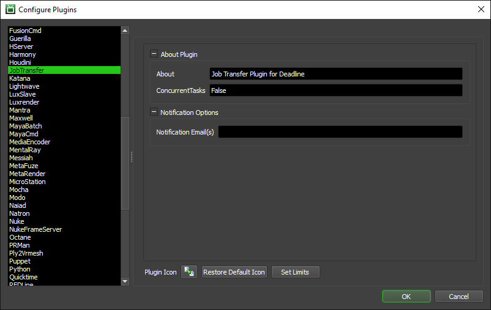

Job Transferring¶
Overview¶
If you have multiple office locations that each have their own Deadline Repository, it is possible to transfer Jobs between them. This can be handy if one office’s farm is sitting idle while the other is completely swamped.
Note though that Deadline will only transfer over the files that are submitted with the Job, which in most cases is just the scene file. You must ensure that all assets the scene requires and all output paths that it writes to exist in the remote location before transferring the Job.
Setting Up a Transfer¶
Before you can transfer a Job, it must be in the Suspend, Completed, or Failed state. Just right-click on the Job, and select ‘Scripts’ -> ‘TransferSubmission’. A Transfer Job window will be displayed.

You’ll notice that you’re actually submitting another Job that will transfer the original Job. The general Deadline options are explained in the Job Submission documentation. The Job Transfer specific options are:
Frame List and Frames Per Task: This is the frame list for the original Job that will be transferred. It will default to the values for the original Job, but you can change them if you only want to transfer a subset of frames.
New Repository: This is the path to the remote Repository that the original Job will be transferred to. Note that the Workers that the transfer Job will be running on must be able to see this path in order to transfer the original Job to the new repository.
Compress Files During Transfer: If enabled, the original Job’s files will be compressed during the transfer.
Suspend Remote Job After Transfer: If enabled, the original Job will be submitted in the Suspended state to the new Repository.
Email Results After Transfer: If enabled, you will be emailed when the original Job has been successfully transferred. Note that this requires you to have your email notification options set up properly.
Remove Local Job After Transfer: If enabled, the original Job in the local Repository will be deleted after the Job has been successfully transferred to the remote Repository.
Once you have your options set, click the Submit button to submit the transfer Job.
Global Transfer Options¶
Job Transfers are handled by a JobTransfer plugin, which has a few options that can be configured which will affect all transfers. To change the JobTransfer plugin options, open the Monitor and select ‘Tools’ -> ‘Configure Plugins’ as a Power User, and then select the JobTransfer plugin from the list on the left.
The following options are available:
Notification Email(s): The email(s) where successful Job Transfer reports will be sent, so that sys admins can keep track of all successfully transferred Jobs. Leave blank to disable this feature. Use commas to specify more than one email address.

{kind=link}